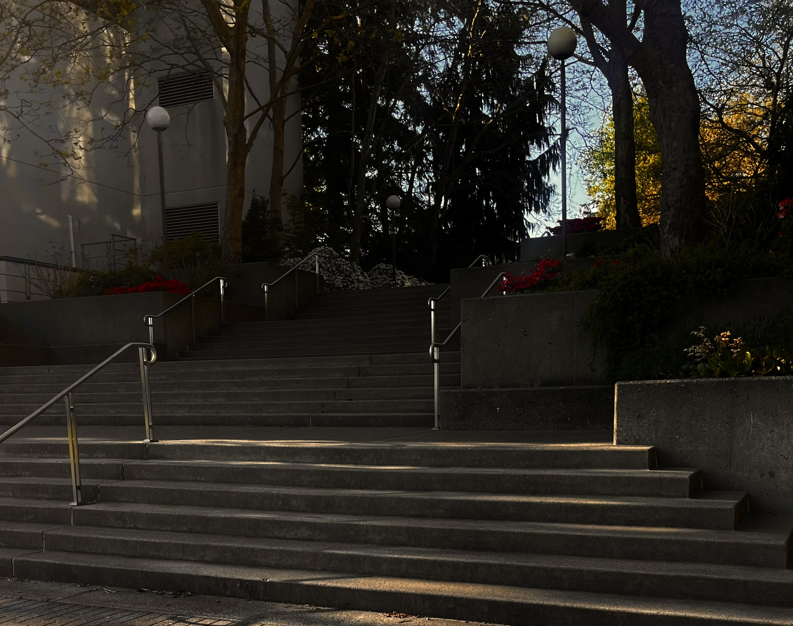

As college students with lives and obligations both inside and
outside of school it can be difficult to find the time or
motivation to have a moment to just take in whats around us.
When was the last time you stepped away from what you were doing to really observe your surroundings? It is more common than ever to miss out on small moments in our day to day lives, there is so much that goes unseen or unnoticed.

Just outside the Environmental Science building there are a small set of steps that lead down towards the Communication and Academic Instructional buildings. These steps provide us with the perfect location and perspective to take back some of that time we miss out on everyday and really observe and reflect on our surroundings.